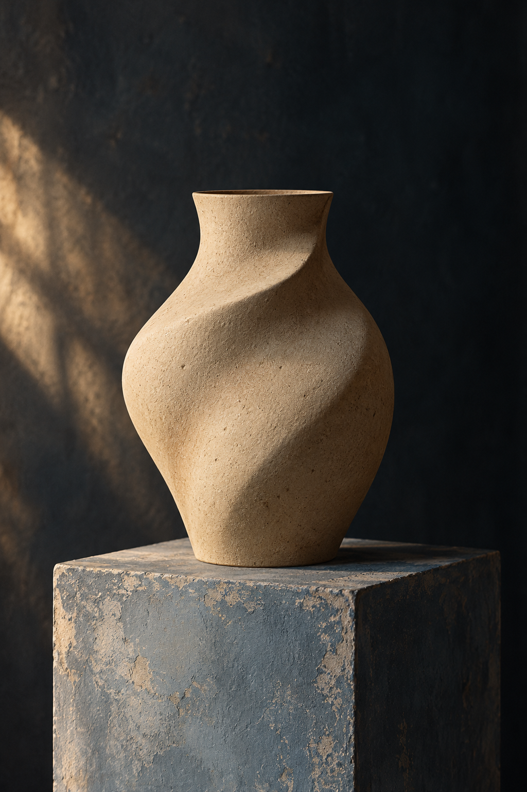

The beauty of the imperfect.
Slow by nature
Each shape begins with a simple idea: make something that feels good to use.
A little more human
Forma is a fictional ceramics studio created for this design demonstration.

Quiet forms and considered details for the moments that make a day.
Explore the collectionEach shape begins with a simple idea: make something that feels good to use.
Forma is a fictional ceramics studio created for this design demonstration.